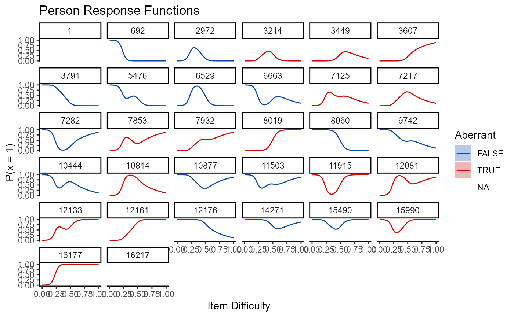
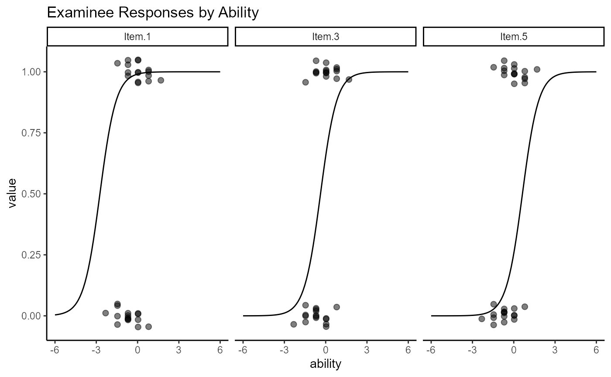

deayala_vignette.RmdThis vignette demonstrates the use of the wizirt package by following loosely the example in chapters 2-6 of De Ayala (2009) with particular emphasis on chapters 2-4. It is important to note that wizirt does relatively few calculations on its own. Instead, wizirt provides a common syntax that is used to work with other packages. Estimation is done invisibly using packages like mirt, ltm, sirt, and PerFit. See the wizirt package documentation for information.
For this vignette we use the following packages:
The data that De Ayala used is available in the mirt package. It is response data from a five-item math test. These responses can be loaded into R using the following code:
data("deAyala") responses <- expand.table(deAyala)
In chapter 2, De Ayala first estimates a Rasch model. We can do this in wizirt:
mod1 <- wizirt(responses, item_type = "Rasch", engine = "mirt")
Here we have first identified our data. The data must be a persons by items matrix or data frame of dichotomous responses. The item_type argument defines whether the model is a Rasch, 1PL, 2PL, or 3PL model. The engine argument specifies what package does the parameter estimation behind the scenes. We choose mirt as the engine because it is fast. After running the model, De Ayala presents some summary statistics,
and some technical information:
The technical information includes information about the model specified, including the code run behind the scenes. It also provides information about convergence. In this same chapter, De Ayala mentions three assumptions for IRT:
Unidimensionality
Conditional or local independence
Functional form
In wizirt, evidence for each of these assumptions can be estimated using the function irt_assume():
assumptions <- irt_assume(mod1)
The evidence for each assumption can be extracted from the model using the print() function in conjunction with the type argument. For example, if we want information for the unidimensionality we can write
This displays the DETECT (xxxx), ASSI (xxxx), and RATIO (xxxx) statistics as calculated by sirt::conf.detect(), as well as the conclusion that can be drawn from each statistic.
Conditional independence can be displayed in a similar way using
This displays a table with standardized LD statistics and p-values as calculated by mirt::residuals-method() and correlations as calculated ltm::rcor.test(). This can be used to identify pairs of items that potentially violate this assumption. There is also a plot method that can be used for the same purpose:
plot(mod1, type = 'ld_pairs')
Information about fit to the functional form is available in wizirt through several absolute, relative, person, and item fit statistics. Currently, absolute fit statistics are only available for models generated using the mirt engine. These statistics can be displayed using the type = “abs” argument for absolute fit measures and type = “rel” for relative fit measures.
print(assumptions, type = "abs")
## M2 df p RMSEA RMSEA_5 RMSEA_95 SRMSR TLI
## stats 428.2595 10 0 0.04619499 0.0425125 0.04998295 0.0421112 0.9638583
## CFI
## stats 0.9638583Person-fit and item fit statistics are available through the irt_person_fit() and irt_item_fit() respectively. Both functions offer a stats option. To be consistent we select infit and outfit statistics using stats = “infit”. The output can be displayed using the print function. For the person fit statistics it is useful to include the arguments patterns = TRUE, and item_order = “by_diff” as arguments to the print function. In my code here I also remove individuals who have identical response patterns to make the output easier to read. I do this using dplyr.
pfa <- irt_person_fit(mod1, stats = c("infit", "Ht")) persons <- print(pfa, patterns = T, item_order = "by_diff") %>% dplyr::distinct(ability, std_err, infit, outfit, pattern, .keep_all = T) persons %>% reactable::reactable()
ifa <- irt_item_fit(mod1, stats = "infit") print(ifa) %>% reactable::reactable()
A number of plots can be used to help diagnose person and item fit as well. These include person response functions:
plot(mod1, type = "np_prf", persons = persons$ids, pfa = pfa)

Notice the plot type is “np_prf”. This stands for nonparametric person response function. The persons argument is here used to present response functions for unique response patterns only. Additionally the pfa argument is used to pass the previously estimated pfa object into the plot function so that it doesn“t have to be called by the function.
Item response functions can be called using the type =”trace" argument. Which items to plot can also be specified either by column-wise position in the data or by the item name using the items argument.
Other information can be added to these plots by adding tags to the plot type. For example, to plot the item residuals add “resid” to the plot type. To show the observed values on the item by the person abilities, add “obs” to the type. Punctuation and spaces can be added to make the plot type more readable.

De Ayala looks at plots of the item and test information. This can be done by specifying the type as “info” and “tinfo” respectively. To force all item information functions to be plotted on the same line, specify the facets argument as FALSE. The standard error of the estimate can be added to the test information plot by adding “SE” to the type.
plot(mod1, type = 'info', facets = FALSE)
plot(mod1, type = "tinfo")
All that has been run in this vignette applies to 1PL, 2PL, and 3PL models as well (though the infit and outfit statistics don’t apply to non-Rasch models). These other models can be run using
They can then be compared using the anova function:
anova(mod1, mod2)
## AIC AICc SABIC HQ BIC logLik X2 df p
## 1 110784.1 110784.1 110807.6 110797.0 110823.5 -55387.03 NaN NaN NaN
## 2 110786.1 110786.1 110814.4 110801.6 110833.4 -55387.06 -0.06661745 1 1
## call
## 1 mirt::mirt(data = data, model = 1, itemtype = "Rasch", SE = T, TOL = 1e-05, verbose = F)
## 2 mirt::mirt(data = data, model = model, itemtype = "2PL", SE = T, TOL = 1e-05, verbose = F)anova(mod2, mod3)
## AIC AICc SABIC HQ BIC logLik X2 df p
## 1 110786.1 110786.1 110814.4 110801.6 110833.4 -55387.06 NaN NaN NaN
## 2 110417.0 110417.0 110464.0 110442.8 110495.8 -55198.50 377.1307 4 0
## call
## 1 mirt::mirt(data = data, model = model, itemtype = "2PL", SE = T, TOL = 1e-05, verbose = F)
## 2 mirt::mirt(data = data, model = 1, itemtype = "2PL", SE = T, TOL = 1e-05, verbose = F)De Ayala, R. J. (2009). The Theory and Practice of Item Response Theory. Guilford Publications.